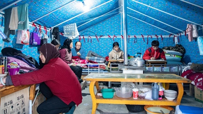

国务院政策例行吹风会：介绍加快建设全国 统一大市场工作进展情况

特写：“一个帐篷，装下了全国的爱心”
高质量发展，乡村行|中河头村“蝶变记"
国际罕见病日（Rare Disease Day）是每年二月的最后一天。2008年2月29日为第一届。
世界卫生组织将罕见病定义为患病人数占总人口0.065％到0.1％之间的疾病或病变，
它们绝大部分属于先天性、慢性病，常常危及生命。
2008年2月29日，欧洲罕见病组织（EURODIS）发起并组织了第一届国际罕见病日。
首届国际罕见病日纪念活动在欧洲各国成功举行，通过各种活动促进了社会对罕见病的认识。
2008年2月29日，欧洲罕见病组织（EURODIS）发起并组织了第一届国际罕见病日。
首届国际罕见病日纪念活动在欧洲各国成功举行，通过各种活动促进了社会对罕见病的认识。